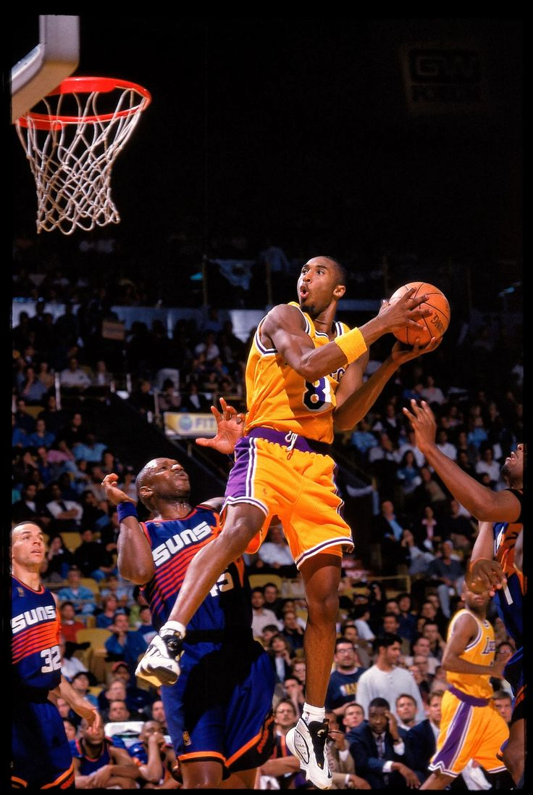
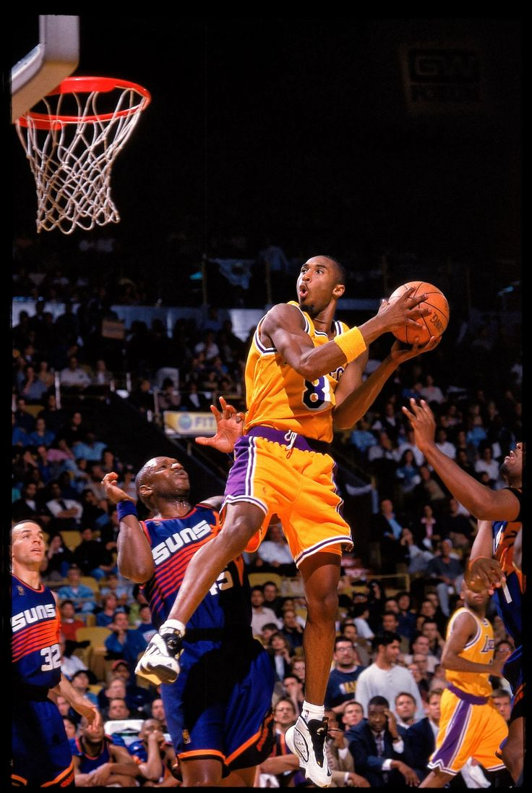

Let's Go!
"Bergabunglah dalam Lomba Olahraga Nasional! Ayo tunjukkan semangatmu, raih prestasi, dan jadilah bagian dari tim pemenang!"
Welcome to the School Sports Competition
Let's Go!
"Bergabunglah dalam Lomba Olahraga Nasional! Ayo tunjukkan semangatmu, raih prestasi, dan jadilah bagian dari tim pemenang!"
 
